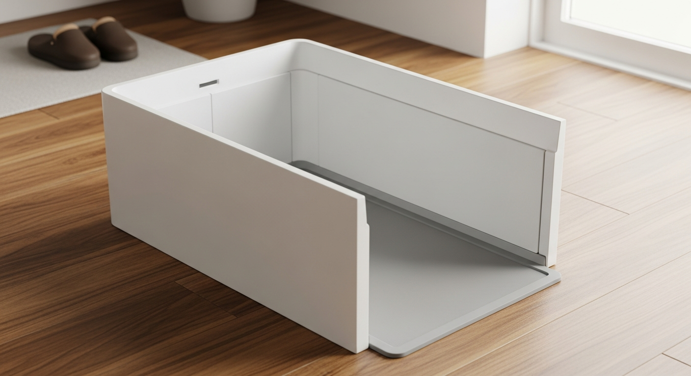
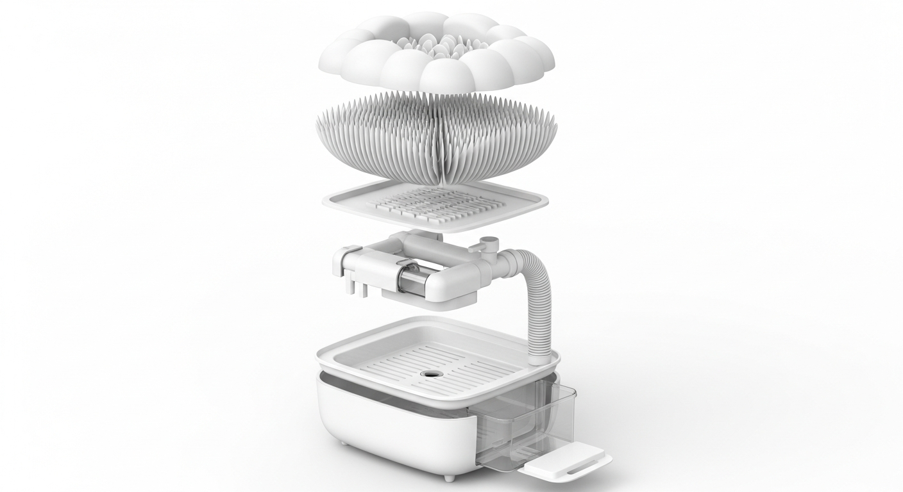

An architectural threshold appliance that ensures dogs enter the home with clean, dry paws. No manual wiping. No messy jets. Pure fluid mechanics.

In Japan, the transition from the outdoors to the indoors is sacred. Dirt stays at the genkan. But for dog owners, the threshold is a daily point of friction. Paws track mud, grit, and water onto hardwood floors. Manual wiping is frustrating, and existing "paw washer" gadgets are cheap, messy, and ineffective.
PawPort is not a pet toy. It is a permanent, high-end appliance designed with the aesthetic restraint of a TOTO washlet. It sits seamlessly in a modern mudroom, utilizing advanced fluid containment to clean paws passively as the dog walks inside.

Upward-firing jets fail because they hit the dog's belly, triggering an instinctual "shake" that sends dirty water across the room. PawPort solves this by never allowing the water to go airborne.
The dog walks through a 4-foot U-channel. The floor is a dense field of 1.5-inch viscoelastic silicone fronds. Warm water flows horizontally below the surface. As the dog steps, its own kinetic weight pushes the paw pads into the wet fronds, scrubbing the toe gaps mechanically.
The final 18 inches of the runway is a dry zone. When the dog steps down, the fronds compress to form a temporary perimeter gasket around the paw. An acoustically-isolated downdraft impeller physically vacuums the moisture off the paw pad before they exit.
The U-channel features a slight parabolic grade to continually flush mud and grit into an easily serviceable trap. The sleek side-tower houses a removable clean-water fill tank and dirty-water collection bucket for homes without permanent floor drains.